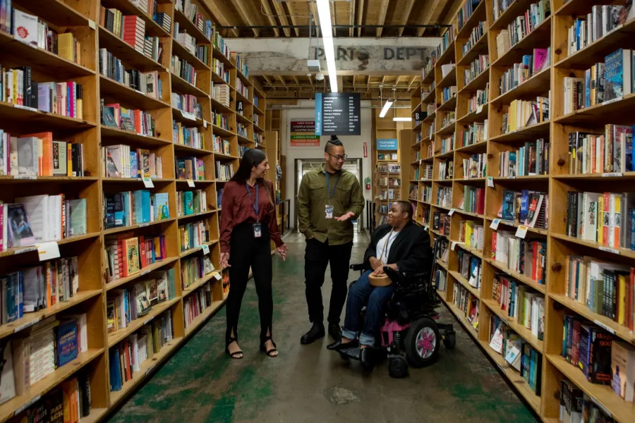
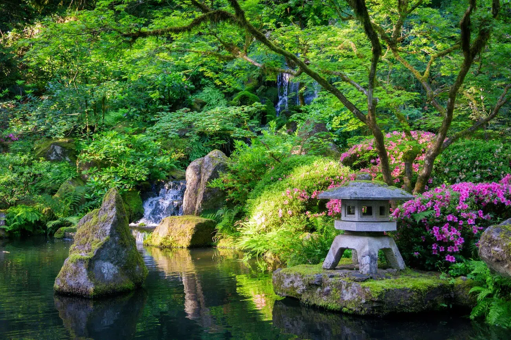
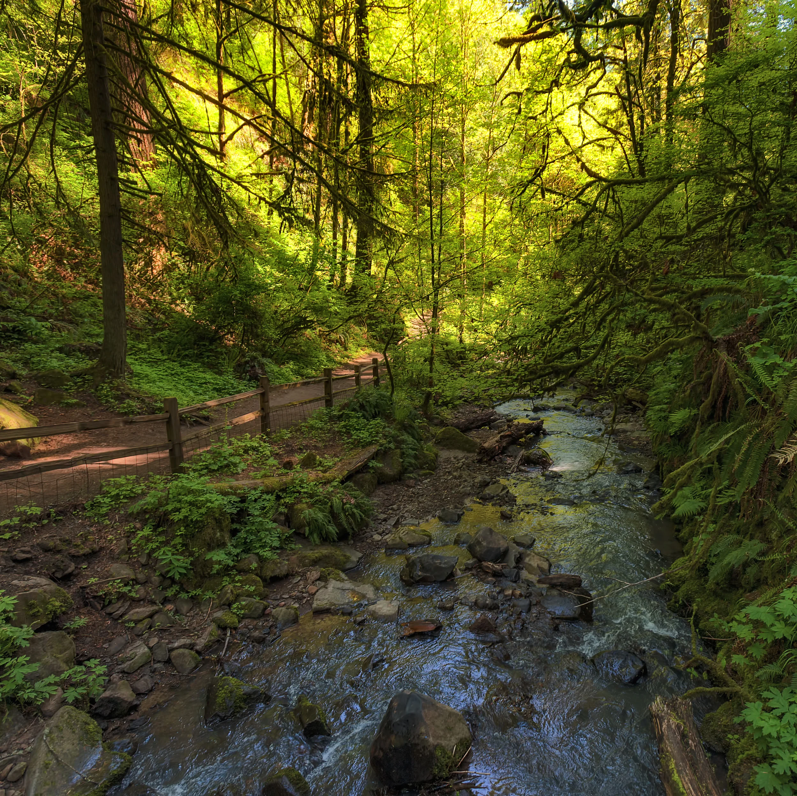
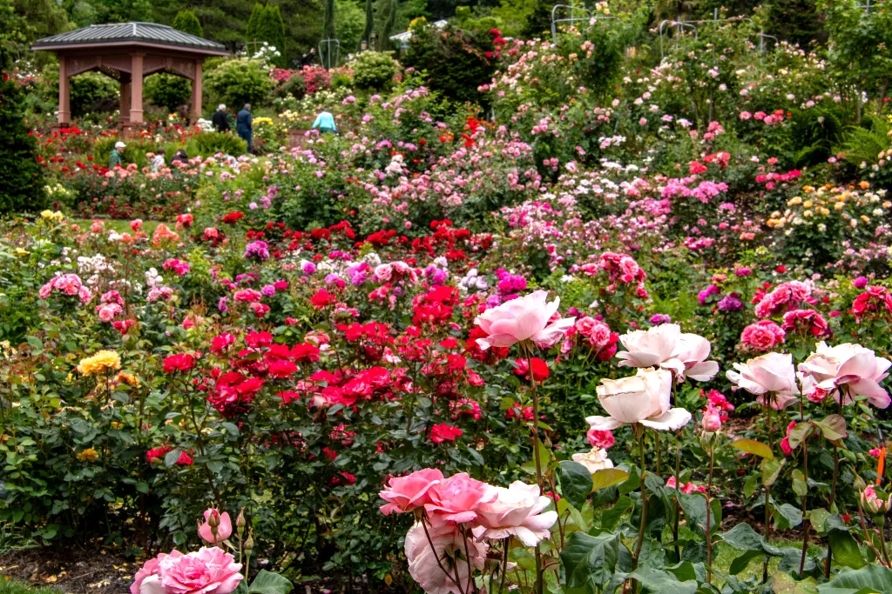
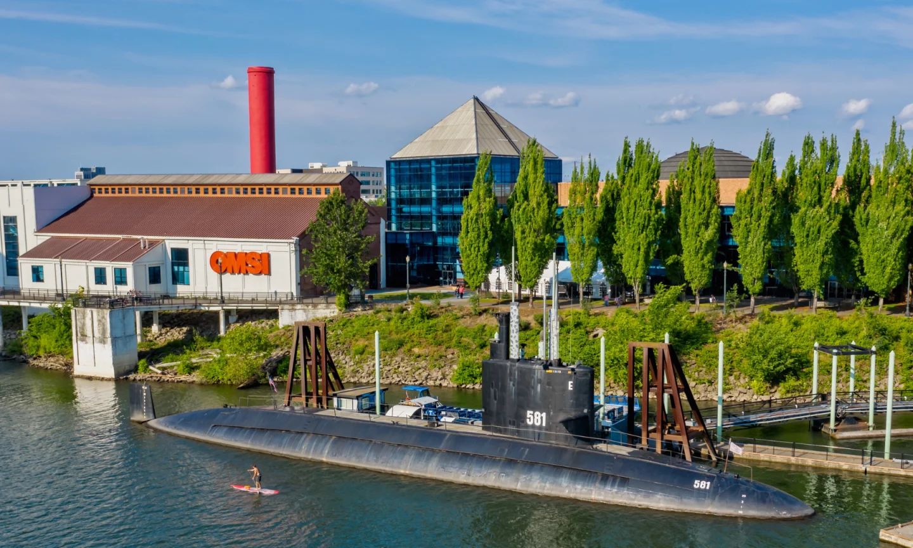
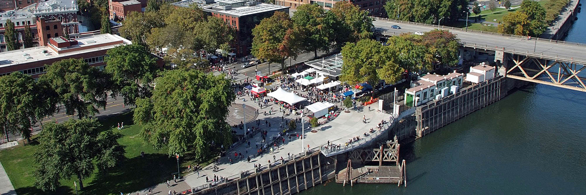

Culture & ShoppingPowell's City of Books
Occupying an entire city block in the Pearl District, Powell's is the world's largest independent bookstore. Browse over one million new and used titles organized across nine color-coded rooms.
From historic independent bookstores spanning entire city blocks to peaceful mountainside gardens and sprawling urban forests, Portland offers unforgettable activities for every interest.

Culture & ShoppingOccupying an entire city block in the Pearl District, Powell's is the world's largest independent bookstore. Browse over one million new and used titles organized across nine color-coded rooms.

Nature & ViewsLocated in Washington Park, this serene 12-acre retreat features five traditional garden styles, authentic tea houses, cascading waterfalls, and sweeping vistas of Mount Hood.

Outdoor AdventureHike through thousands of acres of towering Douglas firs right inside city limits. The famous 30-mile Wildwood Trail links major park landmarks and scenic viewpoints.

Historic LandmarkEstablished in 1917, this historic garden features over 10,000 individual rose bushes blooming from late spring through autumn, with completely free admission for all visitors.

Science & FamilySituated on the east bank of the Willamette River, OMSI features hands-on science labs, an IMAX theater, a planetarium, and guided tours of a decommissioned Navy submarine.

Local ArtsOperating since 1974, this is the nation's largest continuously run open-air arts and crafts market, showcasing handcrafted items, street performers, and local food vendors.